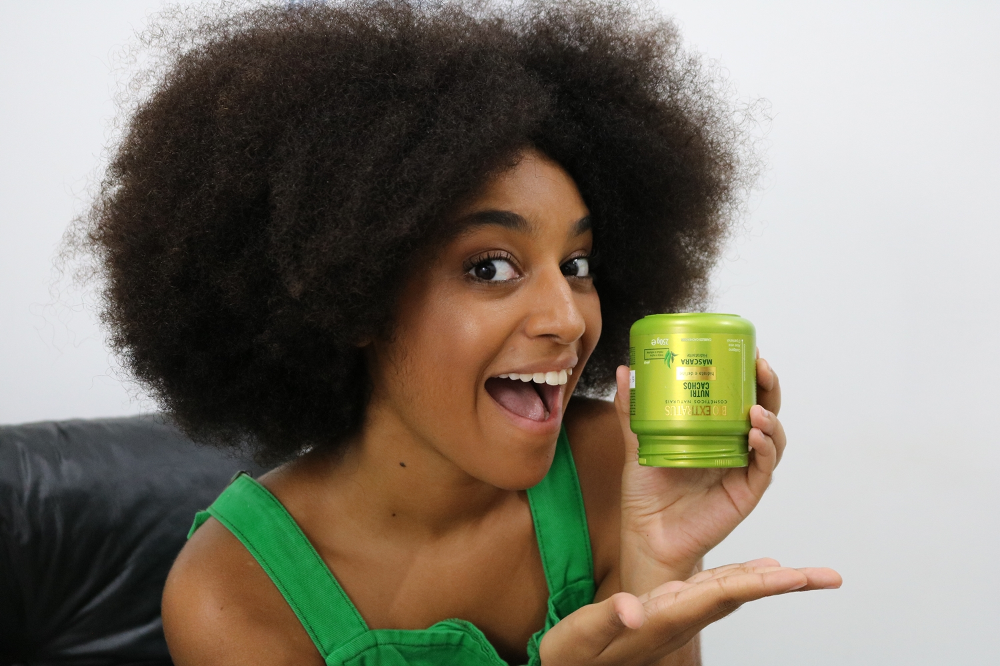
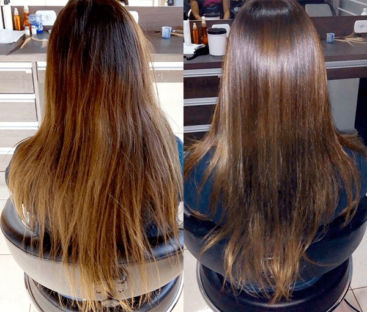

O que é?
A hidratação capilar é um dos pilares essenciais dos cuidados com os cabelos e
desempenha um papel crucial na manutenção de fios saudáveis e vibrantes.
Essa prática consiste em repor a umidade e a água perdida pelo cabelo, que pode ocorrer
devido a vários fatores, como exposição ao sol, uso constante de ferramentas de calor,
procedimentos químicos, fatores ambientais e até mesmo genética.

Importância:
A importância da hidratação capilar é multifacetada. Em primeiro lugar, ela ajuda a
evitar a desidratação dos fios, um problema que pode resultar em cabelos ressecados,
ásperos e sem vida. Cabelos desidratados tendem a quebrar mais facilmente, o que pode
levar a pontas duplas e a uma aparência geral de fragilidade. Além disso, a perda de água
no cabelo pode causar um desequilíbrio no couro cabeludo, levando a coceira, descamação e
problemas de saúde capilar.
Quando há necessidade?
O momento certo para realizar a hidratação capilar depende do estado atual do seu
cabelo. Cabelos saudáveis podem se beneficiar de hidratações menos frequentes, em média a
cada 1-2 meses. No entanto, cabelos mais danificados, secos, ou sujeitos a tratamentos
químicos intensivos, podem exigir hidratações semanais ou quinzenais. Além disso, a
escolha dos produtos desempenha um papel crucial, visto que máscaras de hidratação,
condicionadores profundos e séruns são formulados com ingredientes como glicerina,
pantenol, aloe vera e óleos naturais, que penetram profundamente nos fios, restaurando
sua umidade e elasticidade.
Prejuízos de não fazer:
A hidratação capilar não se limita apenas à busca de cabelos bonitos; ela é uma parte
vital dos cuidados capilares para manter a saúde e a vitalidade dos fios. Negligenciá-la
pode resultar em cabelos frágeis, quebradiços e ásperos, o que, por sua vez, pode levar a
um ciclo de danos capilares difíceis de reverter. Portanto, incorporar a hidratação
capilar em sua rotina de cuidados é uma escolha inteligente para garantir que seus cabelos
permaneçam macios, brilhantes e com uma aparência saudável.
